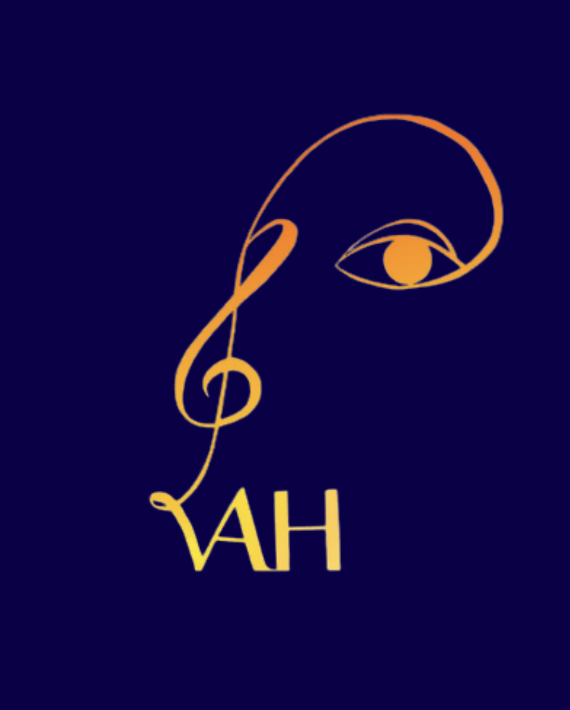
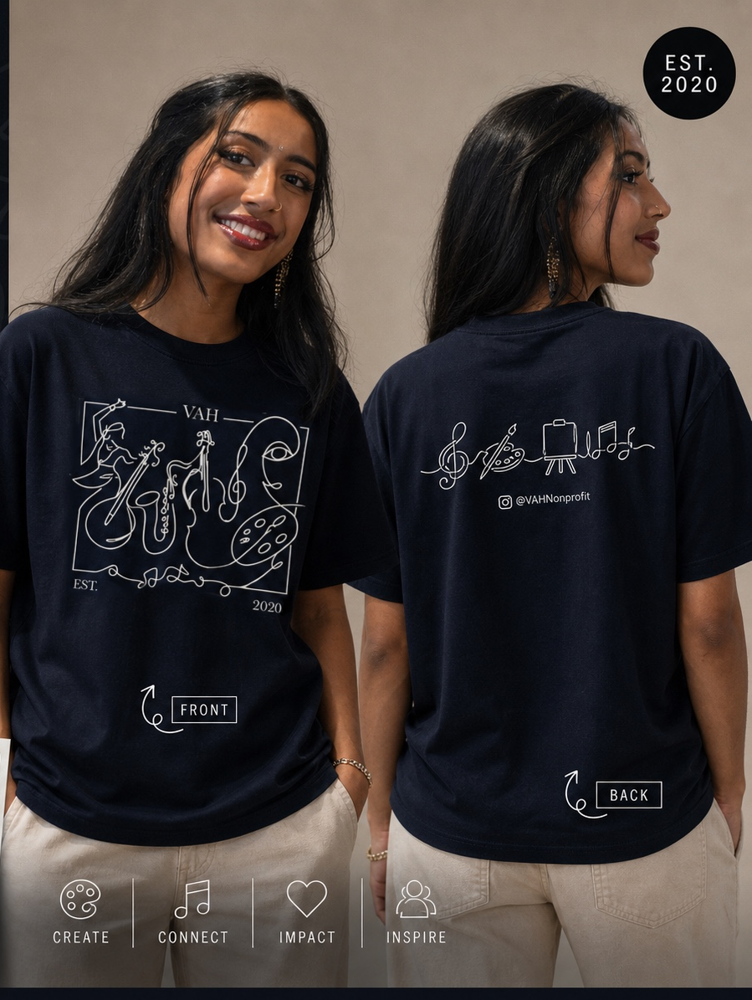
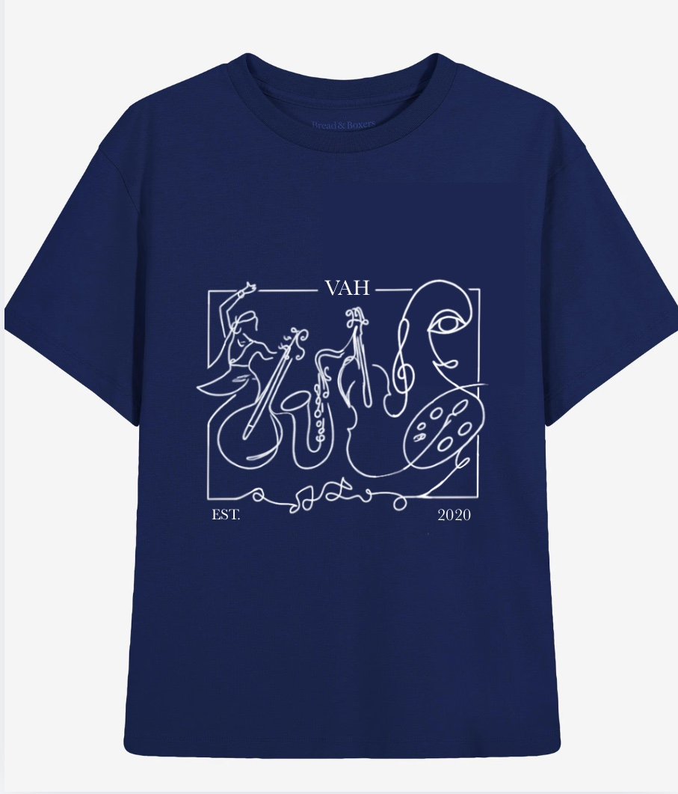
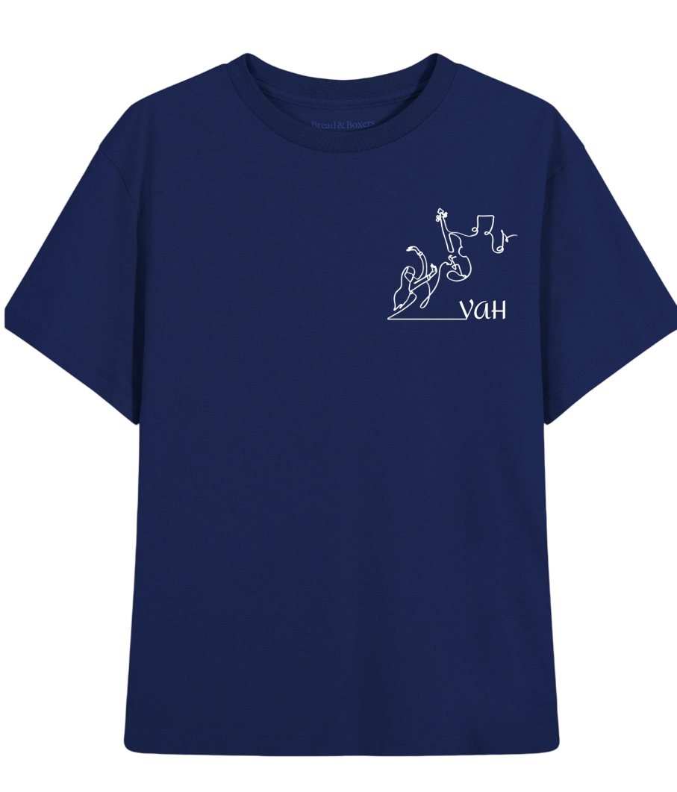
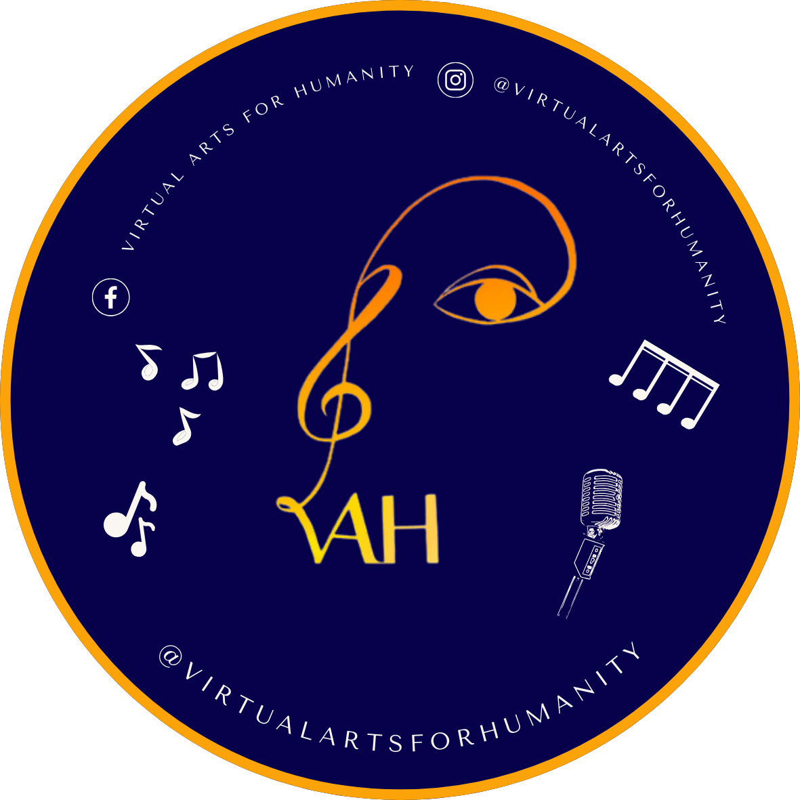
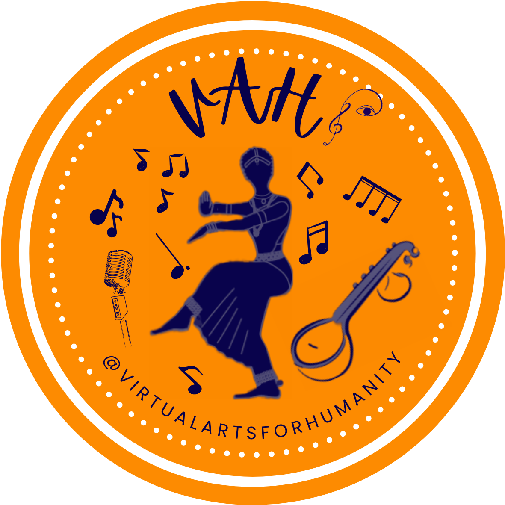
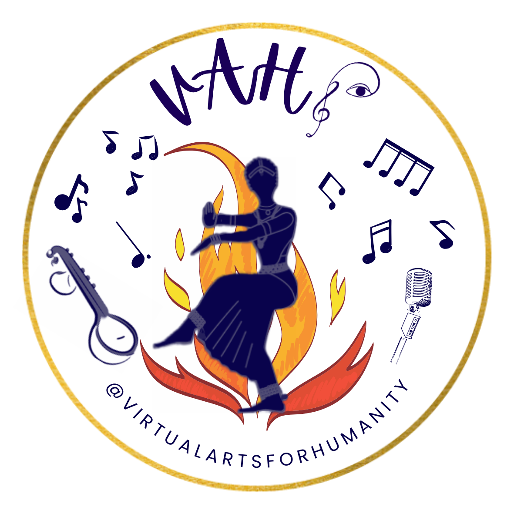
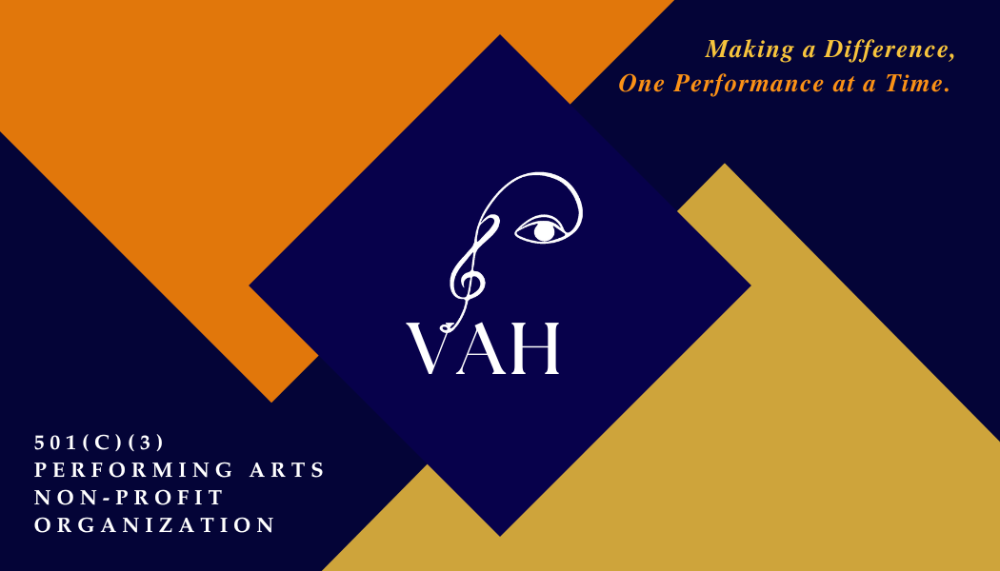
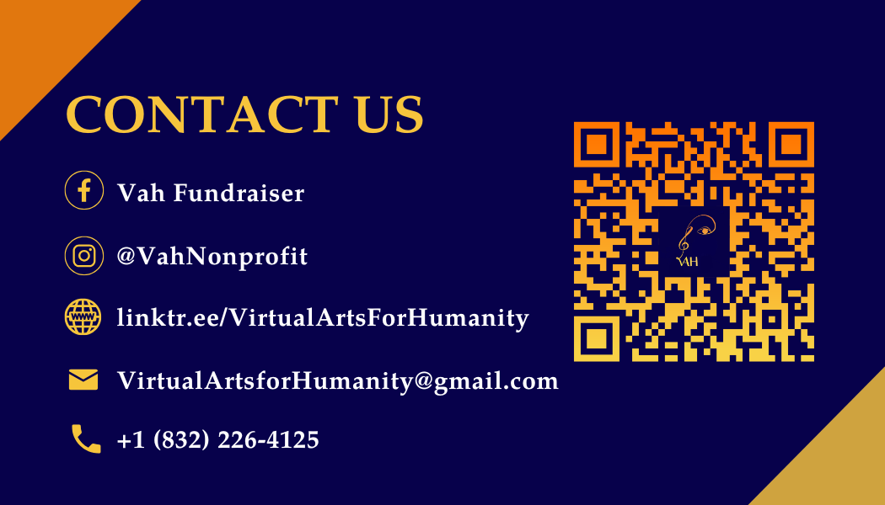

A full visual identity for Virtual Arts for Humanity, a performing arts nonprofit — built to hold up across t-shirts, business cards, stickers, and social media.
VAH (Virtual Arts for Humanity) is a 501(c)(3) performing arts nonprofit that needed a cohesive visual identity — one wordmark that could scale from an Instagram sticker down to a business card and up to a t-shirt print, without losing legibility or feeling disjointed across formats.
The mark started as a simple idea: merge a treble clef with a closed eye, so the logo reads as both "art" and "vision" at a glance. From there, the design extended into two logo variants (navy and white/gold) and an orange sticker alternate, so VAH had options for different backgrounds and use cases — social profiles, print, and merch.

The VAH wordmark built into a full identity system — apparel, business cards, and event stickers.






Front and back designs created for organizational outreach and networking.


The final identity — a treble-clef-and-eye mark paired with a navy, orange, and gold palette — now runs across VAH's stickers, business cards, and merchandise, giving the organization one consistent look across outreach, fundraising, and social media.